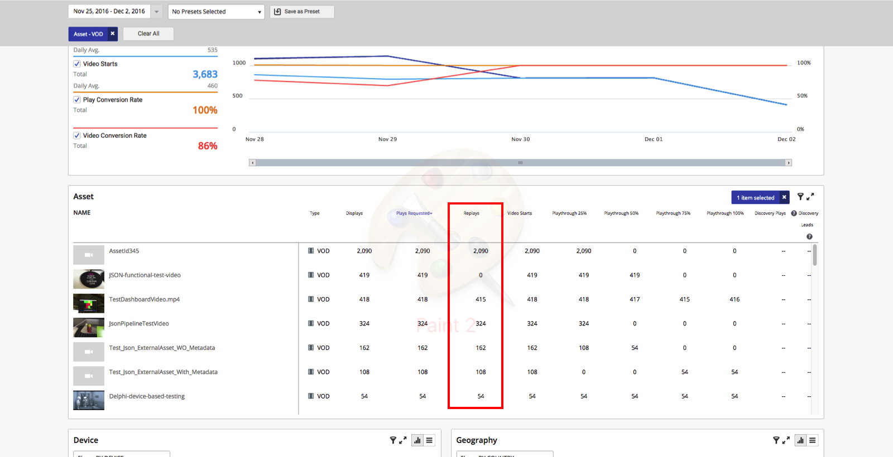
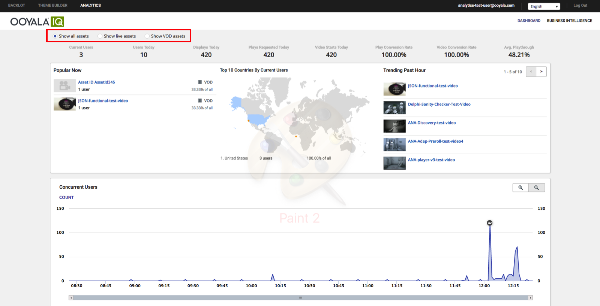
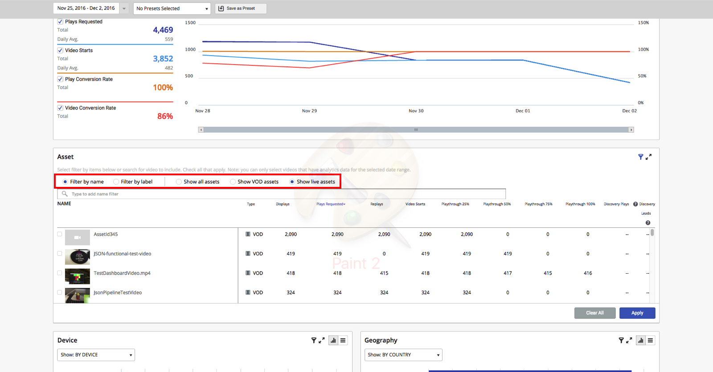
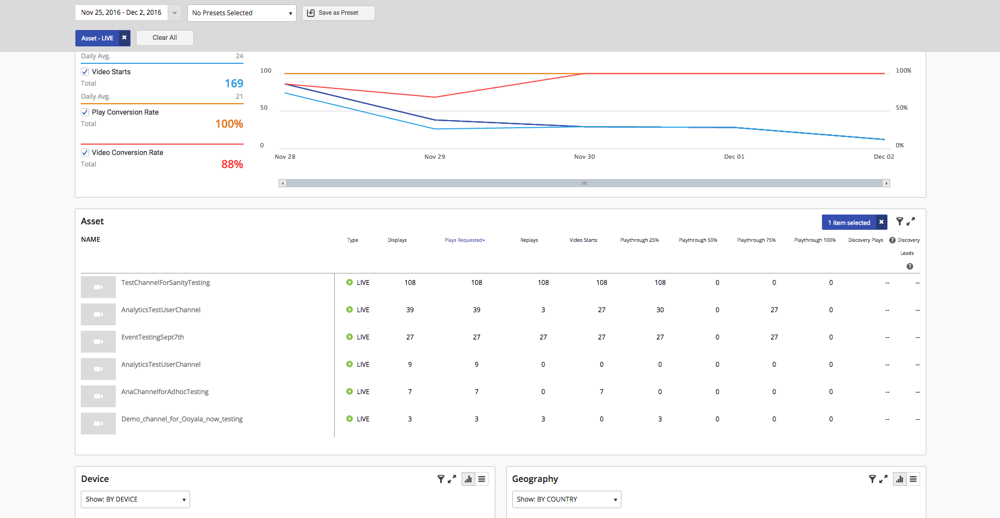

Notable contents of this release include:
- Ooyala IQ Analytics enhancements
- Player V4 Web version 4.10.6
- Mobile SDK for Android version 4.21.0
- Mobile SDK for iOS version 4.21.0
Software Feature Releases
Ooyala IQ Analytics
The replays
metric is available for Ooyala IQ, and is displayed in the UI.

See also the replays metric in the context of the Reporting API.
IQ introduces a new feature whereby the user can filter contents by live
streaming or video-on-demand (VOD) content. The feature is part
of the UI, located at the top of the key performance indicator (KPI) bar:

When the user selects the filtering, the following will be updated to reflect
the live streaming contents:
- KPI bar
- Concurrent user
- Top contents panel
However, the following panels are not supported by the Live/VOD filter
yet.
- Popular now
- Top 10 Countries By Current Users
- Trending past hour
Live filtering for these panels will be supported at a future release.
On the Business Intelligence page, the live filter will work for all metrics:


Note: When "filter by label" is applied, Live/VOD filtering will be disabled. If you
filter by asset type, you cannot filter by asset name. They are mutually
exclusive.
2016-12-15 Release - Player V4 Version 4.10.6
Introducing the Ooyala Player Series
The Ooyala Player
Series provides instructional videos for the Ooyala Player. Check out our first
video, Ooyala Player Architecture, which
talks about core Player features, plugins, and what role they have in the player
experience. Future videos will address such topics as how to embed the player,
how to interact with the Player API, and more.
Default Player Links
To update to the latest Player V4 version from a
previous version of Player V4:
- Download and host all of the new player resources (core plugin, skin plugins, CSS, font, and image
resources, video plugins, ad plugins, analytics plugins, and so on)
and update your resources to point to these new files.
- If you've customized your own Player skin using your own version of
skin.json, download the latest skin.json file and merge any changes in
this file with your customized skin.json file.
- Core Player (required)
- http://player.ooyala.com/static/v4/stable/4.10.6/core.min.js
- Player Skin
- http://player.ooyala.com/static/v4/stable/4.10.6/skin-plugin/html5-skin.min.js
- http://player.ooyala.com/static/v4/stable/4.10.6/skin-plugin/skin.json
- http://player.ooyala.com/static/v4/stable/4.10.6/skin-plugin/html5-skin.min.css
- Video Plugins (at least one required)
- Main video plugin for HLS and MP4:
http://player.ooyala.com/static/v4/stable/4.10.6/video-plugin/main_html5.min.js
- OSMF Flash plugin for HDS:
http://player.ooyala.com/static/v4/stable/4.10.6/video-plugin/osmf_flash.min.js
- Bitmovin plugin for HLS and DASH:
http://player.ooyala.com/static/v4/stable/4.10.6/video-plugin/bit_wrapper.min.js
- Akamai HD video plugin:
http://player.ooyala.com/static/v4/stable/4.10.6/video-plugin/akamaiHD_flash.min.js
- Plugin for YouTube iFrame:
http://player.ooyala.com/static/v4/stable/4.10.6/video-plugin/youtube.min.js
- Ad Plugins
- Ooyala Pulse Ad Plugin:
https://player.ooyala.com/static/v4/stable/4.10.6/ad-plugin/pulse.min.js
- VAST and VPAID Ad Plugin:
https://player.ooyala.com/static/v4/stable/4.10.6/ad-plugin/ad_manager_vast.min.js
- Google IMA Ad Plugin:
https://player.ooyala.com/static/v4/stable/4.10.6/ad-plugin/google_ima.min.js
- FreeWheel Ad Plugin:
https://player.ooyala.com/static/v4/stable/4.10.6/ad-plugin/freewheel.min.js
- Analytics Plugins
- Adobe Analytics (Omniture) Plugin:
https://player.ooyala.com/static/v4/stable/4.10.6/analytics-plugin/omniture.js
- Google Analytics Plugin:
https://player.ooyala.com/static/v4/stable/4.10.6/analytics-plugin/googleAnalytics.min.js
- Nielsen Analytics Plugin:
https://player.ooyala.com/static/v4/stable/4.10.6/analytics-plugin/Nielsen.min.js
- Player V4 YOUBORA Plugin:
https://smartplugin.youbora.com/v5/javascript/ooyalav4/stable/sp.min.js
- comScore Analytics Plugin: Please contact your account manager for
access to this plugin.
- Discovery Plugin
- http://player.ooyala.com/static/v4/stable/4.10.6/other-plugin/discovery_api.min.js
- Playlists Plugin
- http://player.ooyala.com/static/v4/stable/4.10.6/other-plugin/playlists.js
- Live SSAI Pulse Plugin
- http://player.ooyala.com/static/v4/stable/4.10.6/ad-plugin/ssai_pulse.js
Important Notes for this Release
- If you are self-hosting skin.json, if you deploy this release (4.10.6), you
also need to pull the most recent version of the skin.json file (and apply
any of your customizations).
- Device registration for Dash DRM is currently not supported.
Mobile SDK for Android v4.21.0
Notable changes in this release include:
- New Bitrate Changed Notification
- Sample App updates
- Ooyala Skin SDK updates
See the
Mobile SDK for Android Release Notes for details.
Mobile SDK for iOS v4.21.0
Notable changes in this release include:
- New features and enhancements
- Sample App updates
- Ooyala Skin SDK updates
See the
Mobile SDK for iOS Release Notes
for details.
This content was published on Dec 15 at 05:00 AM UTC.